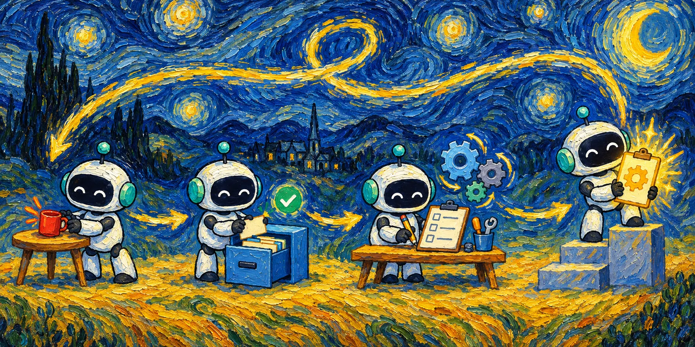
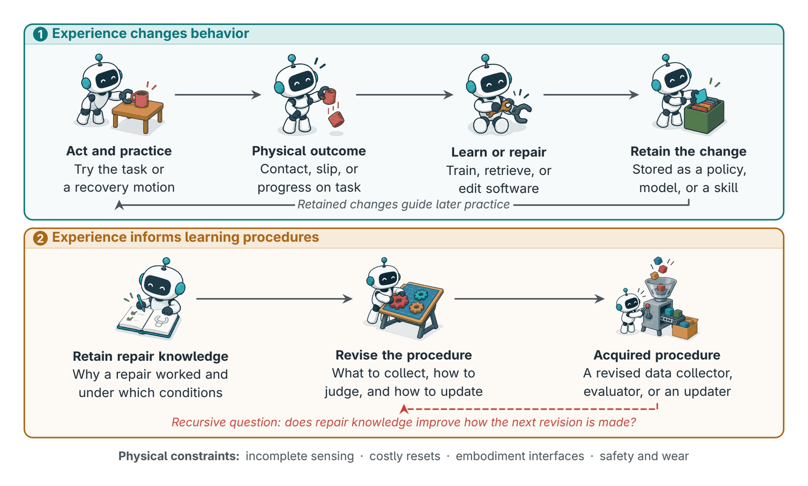
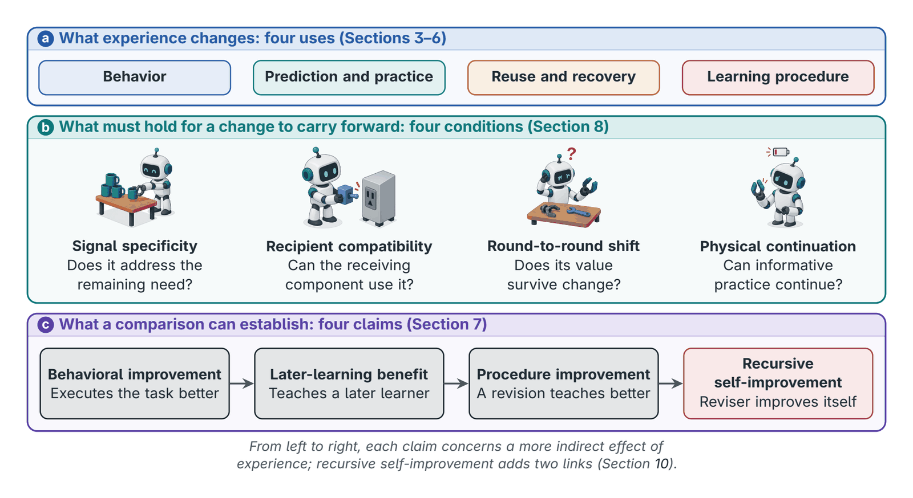
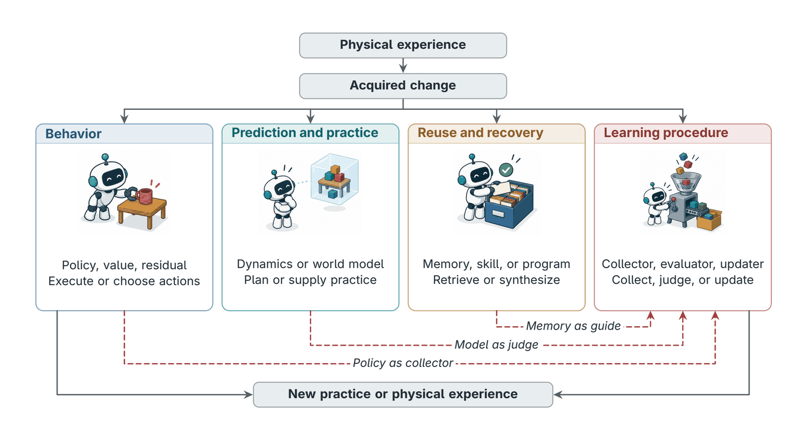
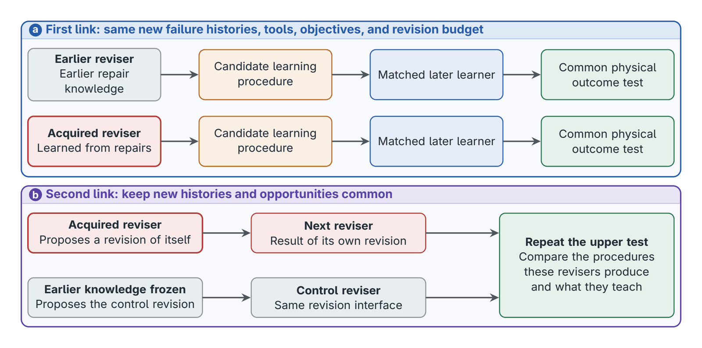

§3 Policy updates
Behavior
- Retained change
- Policy, value, residual
- Immediate use
- Execute or choose actions
- Principal claim
- Better task behavior
A survey & reference library
From physical experience to recursive self-improvement.
The survey
Mechanisms, Evidence, and Open Problems in Physical AI
1National University of Singapore2Huazhong University of Science and Technology3Hong Kong Baptist University
The manuscript is not yet public. This summary is shared with the authors' approval.

What turns physical experience from a source of better behavior into a source of better learning? A correction can teach a motion, contact can reveal dynamics, and a recovery can become a reusable skill; the harder question is whether knowledge of why these changes worked can improve the procedure that produces the next change. The survey reserves recursive self-improvement (RSI) for a stronger relation: knowledge from earlier repairs improves the capability that revises that procedure, and the improved capability then helps improve itself.
To see what present systems establish, the survey follows acquired changes (policies, predictive models, reusable skills, software, and changes to collection, supervision, or updating) into their next use.

Is useful experience missing, or is progress limited by supervision, optimization, action generation, interfaces, or retention?
How does experience change behavior, reusable models or skills, and the collection, supervision, curriculum, or update procedures used in later learning?
What lets one round improve the next, and what causes saturation, drift, or regression?
How do sensing, embodiment, reset, safety, cost, and hardware changes constrain the process?

What current evidence shows. Existing experiments demonstrate behavioral gains, some later-learning benefits, and local procedure improvements, with detailed hardware evidence concentrated in manipulation. Isolating the causal chain that recursion requires is the next step.
§3 Policy updates
§4 World models
§5 External knowledge
§6 Learning procedure updates


Which component limits the next improvement?
Starting benchmarkInjected policy, model, evaluator, and interface faults with similar terminal outcomes; held-out natural failures
Which probe yields evidence that an available update can use?
Starting benchmarkFixed starting system and budget; joint selection versus fixed, information-gain-only, and sequential baselines
How can evaluators be refreshed without changing the intended task?
Starting benchmarkFixed learner and data; varied evaluator and refresh rule; protected physical outcomes
Does knowledge about earlier repairs improve repairs on new failure families?
Starting benchmarkThe two-round comparison of Figure 6 on held-out failure families
When should an artifact be reused, adapted, revalidated, or retired?
Starting benchmarkDeclared changes to sensing, embodiment, timing, interfaces, and memory schemas, plus gradual drift
How should robot time, human attention, compute, and wear be spent over time?
Starting benchmarkTask sequences with maintenance events under finite capacities; Pareto reporting of resources
The first robot that becomes measurably better at rewriting its own recipe, even for a single family of failures, will mark the moment when physical experience begins to compound.
@misc{luo2026physicalrsi,
title = {From Physical Experience to Recursive Self-Improvement: Mechanisms, Evidence, and Open Problems in Physical AI},
author = {Luo, Meng and Song, Jiajia and Xu, Shanqing and Li, Yanlin and Li, Kaixin and Luo, Ziyang and Chen, Wei and Lin, Hongzhan},
year = {2026},
howpublished = {\url{https://github.com/Eurekaleo/awesome-physical-ai-rsi}},
note = {Manuscript}
}The literature
Loading references…
Try another title, author, year, or venue.
Publication status
The survey summary and reference library are available now.
A
link to the paper will follow its release.